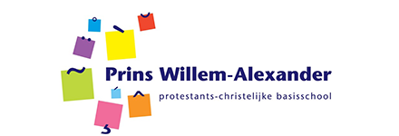

TekstWijzer

Prins Willem-Alexanderschool
Analyseer tekstcomplexiteit en vertaal de uitkomst naar passend leesonderwijs.
Gebaseerd op de kwalitatieve analysecriteria uit Close Reading (Uitgeverij Pica, 2018) en de blokplanning Leesonderwijs van de PWA.
Een snelle kwalitatieve analyse voor Close Reading.
1. Kies de tekstsoort
Focusdoelen uit de blokplanning
Complexiteitsprofiel
Wat kun je didactisch doen?
Bekijk alle doelen uit de blokplanning
Bron doelen: Blokplanning Leesonderwijs, blok sep–dec, groep 4 t/m 8 (door de gebruiker aangeleverd). TekstWijzer selecteert alleen doelen die aansluiten bij de analyse.
De onderdelen staan van moeilijkst naar makkelijkst. Hoe langer de balk, hoe meer dit onderdeel bijdraagt aan de complexiteit van de tekst.
Let op: de score van 1–3 per onderdeel en de gemiddelde complexiteitsscore zijn een praktisch scoresysteem van deze tool. In deze tool wordt het gemiddelde van de acht beoordelingen gebruikt: 1,00–1,66 = gemakkelijk, 1,67–2,33 = gemiddeld en 2,34–3,00 = moeilijk. De aangeleverde Pica-formulieren werken kwalitatief met de categorieën gemakkelijk, gemiddeld en moeilijk en schrijven zelf geen numerieke totaalscore of grenswaarden voor. Gebruik daarom vooral het profiel per onderdeel en je professionele oordeel.